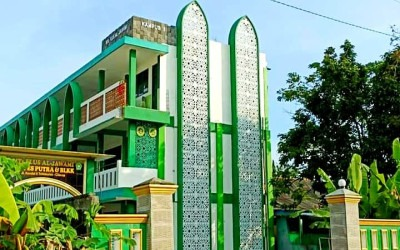

Selamat Datang di Generasi Rabbani
Membentuk pribadi cerdas, berakhlak mulia, dan berwawasan global di MTs Plus Al-Jawami.
Formulir Pendaftaran
150+
Siswa Aktif
7
Ekstrakurikuler
B
Akreditasi
100%
Guru Tersertifikasi
"Kami berkomitmen mencetak generasi masa depan yang seimbang antara ilmu pengetahuan umum dan ilmu agama."
Ahmad Adibudin Al Halim
Kepala Madrasah MTs Plus Al-Jawami
Visi
Mencetak generasi Qur'ani yang unggul dalam bidang ilmu pengetahuan umum, agama dan teknologi.
Misi
- Mewujudkan siswa yang berakhlakul karimah dan mampu mengamalkan ajaran agama Islam 'ala ahlus sunnah wal-jamaah dalam kehidupan sehari-hari.
- Mewujudkan proses pendidikan sesuai dengan sistem pendidikan nasional dan keunggulan lokal.
- Menciptakan lingkungan madrasah yang aman dan nyaman sebagai tempat belajar.
- Menggali potensi siswa untuk mampu berprestasi dalam bidang akademik maupun non akademik.
- Mewujudkan kompetensi peserta didik di bidang teknologi.
Informasi Pendaftaran (SPMB)
Daftar Online
Isi formulir pendaftaran melalui website.
Serahkan Berkas
Lengkapi persyaratan dan kumpulkan dokumen fisik.
Pengumuman
Cek hasil kelulusan di website resmi.
Daftar Ulang
Verifikasi langsung dan pembayaran administrasi.
Persyaratan Berkas
- Fotokopi Akte Kelahiran (2 Lembar)
- Fotokopi Kartu Keluarga (2 Lembar)
- Fotokopi Ijazah/SKHUN yang dilegalisir (2 Lembar)
- Pas Foto 3x4 dan 4x6 masing-masing 4 Lembar (Latar Merah)
- NISN Print Out dari web kemdikbud
Program Unggulan & Fasilitas
Tahfidz Al-Quran
Program hafalan Quran dengan target minimal 3 Juz.
Masjid Raya
Pusat kegiatan ibadah dan pembinaan karakter siswa.
Lab Komputer CBT
Fasilitas komputer modern untuk pembelajaran dan ujian.
Lab IPA Modern
Ruang praktikum representatif untuk sains terpadu.
Tanya Jawab (FAQ)
Kapan batas akhir pendaftaran?
Gelombang pertama ditutup pada tanggal 30 April 2026. Jika kuota belum terpenuhi, akan dibuka Gelombang 2.
Apakah ada asrama (Boarding)?
Ya, kami menyediakan fasilitas pesantren kilat dan program asrama bagi siswa yang berminat.
Berapa biaya pendaftaran?
Biaya formulir pendaftaran adalah Rp 150.000, dapat ditransfer atau dibayar langsung di madrasah.